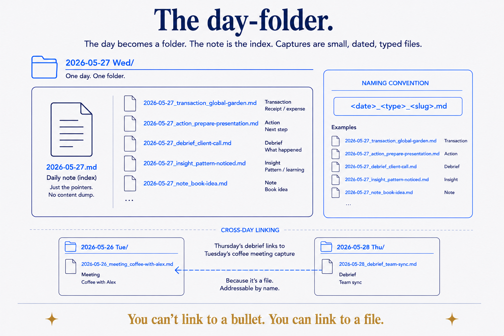
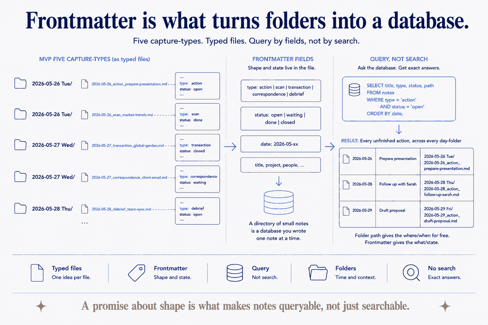

The note that ate the day
Everyone who keeps a daily note eventually meets the same monster. It starts clean — a heading, a few bullets. Then the day happens. A receipt goes under a sub-bullet. A meeting note nests under that. An idea, a task, a link, a half-thought about something your accountant said — all of it pours into the one file, because the one file is today, and today is where things go.
Six months later you have a graveyard of 800-line daily notes that nobody, including you, will ever re-read. Worse, you've mixed the fleeting with the durable: the coffee you bought sits in the same undifferentiated list as the decision that changed your quarter. And when Thursday you wants to reference that thing from Tuesday, there's no clean way to point at it — it's a bullet, buried three levels deep, in a file named after a date. You can't link to a bullet. So you don't. The connection that would have made your notes smart never gets made.
The problem isn't that you captured too much. It's that you made the daily-note the container. A container has to hold everything, so it holds everything badly. The fix is to change what the daily-note is.
The day-folder: a note that points instead of holds
Here's the whole move. Stop treating the day as a file and start treating it as a folder.

_<date>_<type>_<slug>.md. Because every capture is a real file, a Thursday debrief can link straight to Tuesday's coffee-meeting note: you can't link to a bullet, but you can link to a file.A day becomes a directory — 2026-05-27 Wed/ — and inside it, the daily-note demotes itself to one job: being the index of the day. It points to everything that happened; it doesn't contain it. Every meaningful event of that day gets its own small file, a sibling sitting next to the daily-note in the same folder: one for the transaction, one for the scanned document, one for the action you're still chasing, one for the debrief you wrote after the meeting.
The daily-note's target shape is short — a couple of screens, not a scroll marathon. If it's growing past that, that's not a sign you had a full day; it's a sign something in it wants to be its own file. The note stays cheap to read because the substance moved out of it and into the captures it links to.
Naming carries the load: <date>_<type>_<slug>.md. The date roots it in the calendar. The type says what kind of thing it is. The slug says which one. 2026-05-27_transaction_global-garden.md is legible before you've opened it, sortable next to its siblings, and — this is the point — addressable from anywhere else in the system. Thursday's debrief can link straight to Tuesday's coffee-meeting capture, by name, because the coffee meeting is a file now, not a bullet.
Capture-types: a small vocabulary that does a lot of work
Not everything you capture is the same kind of thing, and pretending it is — dumping it all as undifferentiated bullets — is exactly what made the old daily-note unreadable. So each capture declares its type.
The full vocabulary I use runs to a dozen or so — memory, learning, idea, question, decision, action, reflection, meeting-note, research, briefing, debrief, scan, transaction, journal. But you don't start there; you'd never adopt it. The MVP set is five, and it covers most of real life: action (something pending), scan (an OCR'd document), transaction (a receipt or payment), correspondence (a formal message in or out), and debrief (what you made of an event afterward). Add types only when you feel the absence of one — when you keep wanting to file something and none of the five fit.
The types aren't decoration. They're the thing that later lets you ask real questions of your own life: show me every open action, every transaction this month, every debrief from meetings with this person. A type is a promise about shape, and a promise about shape is what makes a pile of notes queryable instead of merely searchable.
Frontmatter is what turns folders into a database
The type lives in the file's frontmatter, alongside its other machine-readable fields — status, slug, domain, the parties involved, links to related documents. This is the quiet engine of the whole pattern, and it's where day-folders stop being a tidy filing habit and become something you can compute over.

type and a status in each file mean "every unfinished action across every day" is a query — SELECT ... WHERE type = 'action' AND status = 'open' — not a search you hope catches everything. The folder path gives the where and when for free; the frontmatter gives the what and the state.A tag says a note is loosely about a topic. Frontmatter says what a note is, in fields a machine can filter: type: action and status: open is not a search — it's a query, and it returns every unfinished thing across every day-folder you've ever made. The folder structure gives you the where and the when for free (it's in the path); the frontmatter gives you the what and the state. Together they turn a directory of small files into a database you happened to write one note at a time.
This is the same reason folders still beat tags: structure that means something beats a flat namespace you have to remember. Day-folders just apply it to time.
Capture, then promote — and keep the original where it landed
Most captures are born in a day-folder and quietly die there, and that's correct — a receipt doesn't need a second home. But some captures graduate. The idea becomes a project. The decision becomes something you'll reference for years. When that happens, you promote it: the durable version moves to its canonical home in the relevant domain, and the original capture stays in the day-folder, marked as promoted, with a backlink to where it went.
That "keep the original where it landed" rule looks like clutter and is actually the most valuable part. The day-folder is an audit trail — it preserves when you first knew a thing, in the place time filed it. Promotion tells you where the polished version lives now; the capture tells you where it came from and when. You get the tidy canonical note and the honest history, instead of trading one for the other. (The promotion workflow is its own discipline — capture by time, promote by meaning — and worth its own piece.)
The trade-off, stated honestly
This produces a lot of files. A traditional daily-only system might leave you with a thousand notes; day-folders with real capture discipline will leave you with ten thousand. That's the cost, and it's a real one: mobile indexing is slower over that many files, and a newcomer has to learn the type-taxonomy before the system pays off.
But count what you get for the files. Cascade roll-ups get richer — a week view can see every open action and every transaction beneath it, because those are typed files, not prose buried in seven daily notes. Retrieval gets sharper — you query by type and status instead of scrolling. And every day-folder is a clean, git-mergeable unit, which matters more than it sounds the day you sync across devices. More files is the price. Addressability, queryability, and an audit trail are what the price buys, and for anything you intend to keep, that trade is not close.
Push, not against, the atomic-notes crowd
The [Zettelkasten](../concepts/zettelkasten.html) tradition has taught a generation to write atomic notes — one idea per note, densely linked. That instinct is right, and day-folders don't fight it. What they add is a place for the raw material to land first, dated, before it's earned the status of a permanent note.
The purist writes the polished atomic note directly. The problem is that most of what happens in a day isn't a polished idea yet — it's a receipt, a task, a fragment, a thing-your-accountant-said. Force all of that through the atomic-note discipline and you either don't capture it (loss) or you pollute your permanent notes with fleeting debris (mess). The day-folder gives the fleeting stuff a dignified, dated, typed home of its own — and the good bits get promoted into permanent notes later, deliberately, when they've proven they deserve it. Capture by time. Promote by meaning. It's the same respect for atomicity, with an on-ramp.
Make the daily-note the cheapest thing to read
The daily-note that tries to hold your whole day becomes the most expensive file in your vault — the one you dread opening and never re-read. Invert it. Make it the cheapest thing to read: a slim index that points at a folder of small, dated, typed captures, each one addressable from anywhere else in your system.
This is structure beats magic at the smallest scale that matters — the scale of a single day. The magic answer is a smarter note-taking app that somehow organizes the mess for you. The structural answer is humbler and it holds: give the day a folder, give each capture a file and a type, and let the daily-note go back to doing the one thing it's good at — pointing. Tuesday's coffee becomes linkable from Thursday's debrief, your open actions become a query instead of a memory, and the note that used to eat the day becomes the lightest thing in it.
Part of the Structure Beats Magic series. The folders-over-tags argument is in Folders Still Beat Tags; pointing an AI at this structure is Context Engineering for One; the promote-by-meaning half is its own piece. The calendar spine that day-folders hang on is PDR-065.